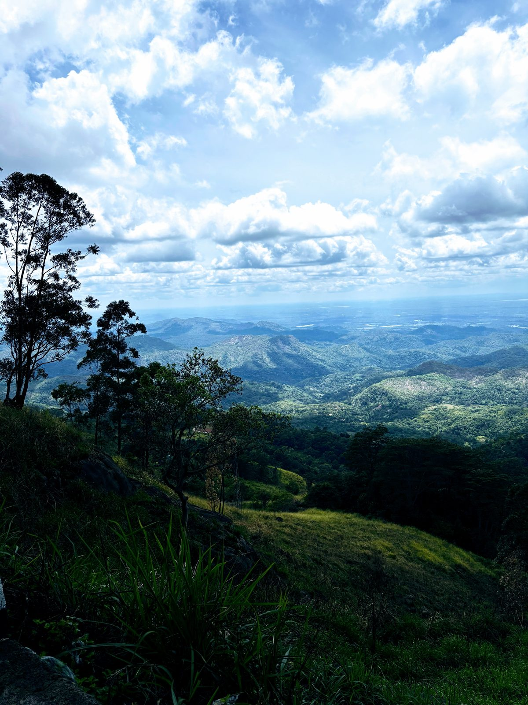

B1 — Wildlife & Coast
The Wild Highlands
& East Coast Loop
Peak Performance, Coastal Calm
A curated loop designed for the adventurous spirit, focusing on the raw beauty of the island's interior before settling on the tranquil coast. The adventure opens in the lush greenery of Belihul Oya before ascending to the dramatic ridges of Haputale's legendary tea country. The loop then swings east through the untouched wilderness of Kumana National Park, before concluding on the silent golden shores of Tangalle — a sophisticated alternative to the standard circuit for those who want to see Sri Lanka at its most honest.
Five Chapters, Seven Days
Belihul Oya
Jungle & Riverside
The expedition opens in the lush greenery of Belihul Oya, where riverside stays provide a peaceful introduction to the island's natural rhythms.
Haputale
Highland Exploration
Travellers ascend to the dramatic ridges of Haputale. The focus here is on physical immersion, featuring expansive mountain walks and treks through mist-shrouded peaks.
Haputale & Ella
Rugged Terrain
Under expert guidance, navigate the challenging paths of the central highlands — hidden waterfalls, high-altitude landscapes, and the mountain energy of Ella's famed Nine Arches.
Kumana National Park
Eastern Wilderness
After the energy of the highlands, the journey shifts to the quiet east for an exclusive safari in Kumana National Park — a sanctuary famous for its diverse birdlife and elusive leopards.
Tangalle
Coastal Serenity
The route concludes at the Silent Beach in Tangalle, offering a private and peaceful farewell to the adventure before a seamless transfer to the airport via the Southern Expressway.
The full day-by-day itinerary — including stays, activities and pace — is shared exclusively upon enquiry.
Request the Full Itinerary